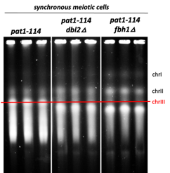

OUR RESEARCH
Our research focuses on chromosome biology in the fission yeast Schizosaccharomyces pombe, with particular interest in DNA repair, chromatin regulation, meiosis and karyogamy.
01 — DNA repair and chromatin remodelers
Homologous recombination is a high-fidelity DNA repair pathway that repairs DNA double-strand breaks through Rad51-mediated strand invasion into a homologous DNA template. Chromatin dynamics, regulated by histone modifications such as acetylation, methylation, phosphorylation, and ubiquitination, play central roles in transcriptional regulation and have also emerged as important regulators of DNA repair and the replication stress response.
Our projects aim to identify and characterize chromatin-associated factors that regulate the DNA damage response and homologous recombination in the fission yeast.

Research in practice

Rad51 immunofluorescence in wild type and dbl2Δ cells, showing Rad51, DAPI-stained nuclei and merged images.

Spot assay showing growth of wild type and mutant strains on mutagen-containing media. Improved growth in the double mutant indicates a positive genetic interaction of dbl2 and fbh1 within the same repair pathway using homologous recombination.

Pulse-field gel electrophoresis separation of three S. pombe chromosomes. Deletion of either dbl2 or fbh1 recombination factors leads to instability of chromosome III.
02 — Meiosis and karyogamy
Fission yeast Schizosaccharomyces pombe is a suitable model to study meiosis. Upon pheromone signalling, haploid cells of opposite mating types conjugate to form a pre-zygote, followed by karyogamy – a key event in meiotic progression. The process includes congression and fusion of haploid nuclei, which produces a diploid zygote and enables two subsequent rounds of meiotic division.
In a large genetic screen, we have identified several candidate genes with a potential function during karyogamy, which has not been yet elucidated. Our main aim is to describe and explain their role as prominent and non-canonical regulators of fission yeast meiosis.

Research in practice

Functional knockout of spc2 leads to defective fusion of endoplasmic reticulum membrane in fission yeast, manifested as twin-horsetail.

Live cell imaging of closed mitosis in fission yeast, showing the nuclear membrane and heat shock protein 104.

DNA (red) in meiotic zygotes is segregated by the nuclear spindle (green) during the two meiotic divisions, MI and MII, resulting in the formation of four equally sized DNA masses.